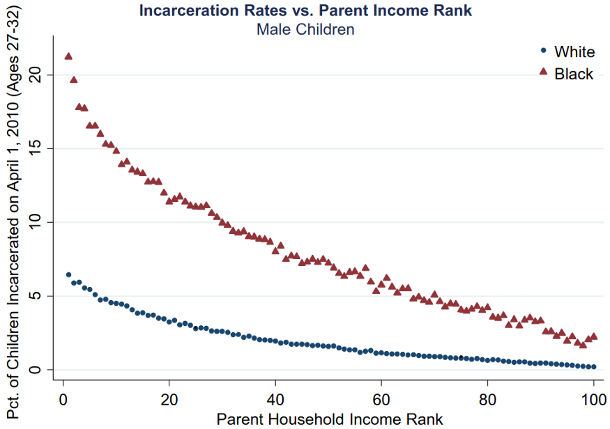

It is no secret that kids from poor families go to prison at a higher rate than kids from rich one. And since Black men are more likely to grow up poor than White men, it is no surprise that Black men go to prison at a higher rate than White men. To find out if family poverty was the reason, renowned economist Raj Chetty and his coauthors found out which men are in prison and their parents’ income.
 Image source: https://opportunityinsights.org/wp-content/uploads/2018/04/race_slides.pdf
At all levels of parents’ income, Black men are 3 times more likely to be in prison than White men. A Black family earning $80,000 can expect their male children to go to prison at the same rate as the very poorest Whites. For Blacks families at the lowest income level, more than 1 in 5 Black male children near age 30 are in prison. Not “have been to prison”, but are currently in prison.
These numbers are horrid. We need to improve them, dramatically.
NOTE: I use “prison” to refer to any of the following: federal detention center, federal prison, state prison, local jail, residential correctional facility, military jail, or juvenile correctional facility.